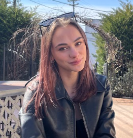

I am a student journalist at the University of Maryland, pursuing a B.A. in journalism with a minor in sustainability studies. I plan on pursuing a law degree after my undergraduate experience. I am passionate about environmental writing and feature writing.
Responsible for pitching, researching and interviewing for stories on the science and tech beat
Researched, pitched, wrote and edited stories about underrepresented communities in and around College Park
Pitched, shot and edited Instagram content for College Park Media Self and Society program for incoming freshman to better understand the program